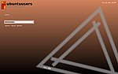
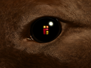
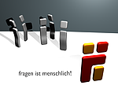
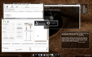
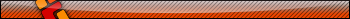
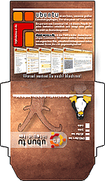

Wettbewerb
Auf dieser Seite können alle Benutzer ihre Werke zum vierten Geburtstag von ubuntuusers.de präsentieren. Damit man direkt einen kleinen Einblick bekommt, bitte ein passendes Bildschirmfoto unter "Weitere Aktionen -> Dateianhänge verwalten" hochladen. Um dieses in die Tabelle einzufügen "Bearbeiten" auf dieser Seite anwählen und den vorgefertigten Block unten an die bestehende Tabelle kopieren. Die doppelte Raute ## sowie das folgende Leerzeichen entfernen. Die Daten ergänzen und anschließend mit der "Vorschau" kontrollieren ob alles korrekt funktioniert. Zum Schluss "Speichern". Das war es. 
Mit der Teilnahme am Wettbewerb erklärt sich jeder Teilnehmende bereit, sein Beitrag unter die Creative-Commons-Lizenz „Namensnennung-NichtKommerziell-Weitergabe unter gleichen Bedingungen 2.0 Deutschland“ zu stellen.
Kategorie 1¶
| Themes für Loginmanager (GDM, KDM, XDM) | ||||
| Screenshot | Informationen | |||
|  | Ersteller: | Kuehly | ||
| Thread: | - | |||
| Displaymanager: | GDM | Wettbewerb/triangle-uu.tar.gz  , Wettbewerb/triangle-uu_4-3.tar.gz , Wettbewerb/triangle-uu_4-3.tar.gz | |||
Kategorie 2¶
| Wallpaper (mit ubuntuusers-Logo) | ||||
| Screenshot | Informationen | |||
| Bild 1 | Ersteller: | dan1el | ||
| Thread: | - | |||
| Programm: | GIMP | |||
| Bild 2 | Ersteller: | zubunt | ||
| Thread: | - | |||
| Programm: | GIMP, Inkscape | |||
| Bild 3 | Ersteller: | eishailiga | ||
| Thread: | - | |||
| Programm: | ||||
| Bild 4  | Ersteller: | michote | ||
| Thread: | - | |||
| Programm: | Blender 3D | |||
| Bild 5 | Ersteller: | BubiTux | ||
| Thread: | - | |||
| Programm: | GIMP, Inkscape | |||
| Bild 6 | Ersteller: | marimo | ||
| Thread: | - | |||
| Programm: | ... | |||
| Bild 7  | Ersteller: | tux21b | ||
| Thread: | - | |||
| Programm: | Blender 3D (.blend-Datei auf Wunsch) | |||
| Bild 8 | Ersteller: | Bobbin | ||
| Thread: | - | |||
| Programm: | GIMP, Inkscape, POV-Ray, XMP Manager | |||
| Bild 9 | Ersteller: | undercover90 | ||
| Thread: | http://forum.ubuntuusers.de/post/1666761/ | |||
| Programm: | - | |||
| Bild 10 | Ersteller: | tomex | ||
| Thread: | - | |||
| Programm: | GIMP | |||
| Bild 11 | Ersteller: | undercover90 | ||
| Thread: | - | |||
| Programm: | GIMP, Inkscape | |||
| Bild 12 | Ersteller: | Ritze | ||
| Thread: | - | |||
| Programm: | GIMP, gThumb | |||
| Bild 13 | Ersteller: | rocco_storm | ||
| Thread: | - | |||
| Programm: | GIMP, Inkscape | |||
Kategorie 3¶
| Themes für GNOME, KDE und Xfce | ||||
| Screenshot | Informationen | |||
|  | Ersteller: | michote | ||
| Oberfläche: | GNOME mit Compiz Fusion und Emerald | |||
| Thread: | http://forum.ubuntuusers.de/topic/schneeball-theme-wettbewerbsbeitrag-von-micho/ | |||
| Dateianhang: | Wettbewerb/schneeball.jpg , Wettbewerb/schneeball.tar.gz , Wettbewerb/schneeball.emerald | |||
Kategorie 4¶
| Kreativ | ||||
| Screenshot | Informationen | |||
| Kreativbeitrag 1 | Ersteller: | BuffaloBill | ||
| Ubuntuusers-Signatur | Ich hoffe das dieser Betrieg für dich nützlich oder zumindest unterhaltsam war und wünsche dir viel Spass mit Ubuntu und einen wunderschönen Tag, mögen die Sorgen dich meiden und die Freuden dich finden! [Username] | |||
| - | - | |||
| Kreativbeitrag 2 | Ersteller: | e2b | ||
| Idee: | Userbar (grafische Signatur) für die Verwendung in anderen Foren | |||
| Umsetzung: |  (mehr, Thread) | |||
| - | - | |||
| Kreativbeitrag 3  | Ersteller: | turicon | ||
| Idee: | CD-Cover zum Selbermachen für Intrepid Ibex | |||
| Download: | Das Cover als PDF in 300dpi: Wettbewerb/cd-cover.pdf Wer eine Anleitung benötigt, die gibt es hier. | |||
- Erstellt mit Inyoka
-
 2004 – 2017 ubuntuusers.de • Einige Rechte vorbehalten
2004 – 2017 ubuntuusers.de • Einige Rechte vorbehalten
Lizenz • Kontakt • Datenschutz • Impressum • Serverstatus -
Serverhousing gespendet von